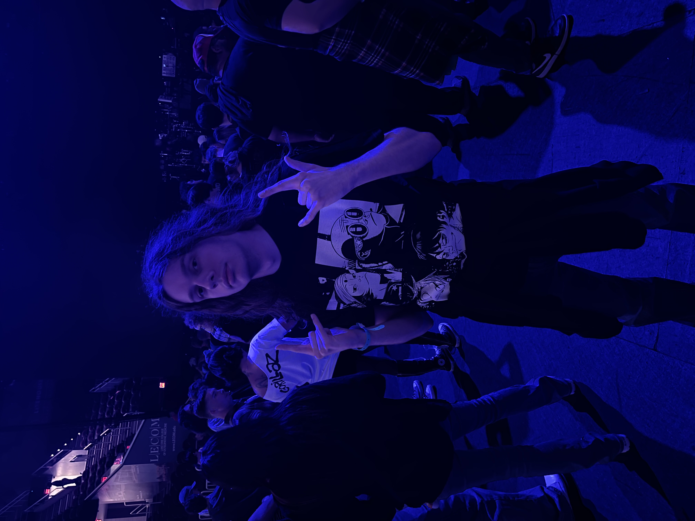

Concerts are one of my favorite activities of ALL TIME. So I decided I would dedicate this website to all the ones I have been to.
If you would like to see a more in depth version of everything you can visit my account on setlist.fm

Also here's a button. It doesn't do anything... but you never know.